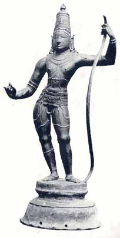
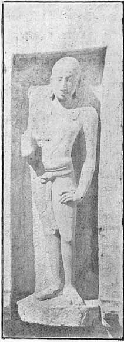
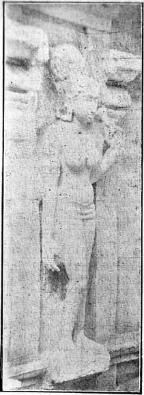

Sculpture at its Best
BY T. G. ARAVAMUTHAN
I. THE BEAUTY OF BALANCE

Kodanda-Rama
An unfailing theme with the south Indian sculptor has been Kodanda-Rama–Rama with the bow,–but rarely has the theme found more fitting expression than in a marvellous image disclosed about two years ago by the curious pick of a husbandman somewhere near Ramnad.1 Rama, in Indian tradition, is the bow-man sans pareil, the warrior sans reproche, and is deservedly popular in the character of Kodanda-Rama. How well-beloved in south India is Rama as bow-man and how greatly he has appealed to the sense of satya that abides in the Indian, is shown by the large number of exquisite sculptures of him in that character.
Next to Nataraja, and next only to him, comes Kodanda-Rama as a creation and an achievement or south Indian sculpture. While endless Natarajas, stereotyped in form and expression, though ennobled by masterly craftsmanship, issued almost from every village studio, no Kodanda-Rama seems to have emerged which was not a high-grade product of art. Much fewer in number are the Kodanda-Ramas comparatively, but they rarely degenerate into the angular and gawky figures which sometimes served for Nataraja.
The image found near Ramnad is not the finest Kodanda-Rama we know of: but even this image, with all its faults, shows how dignity and grace could blend in equal measure and with what confidence the Indian sculptor can rely on an innate sense for balance.
Modelled as it is in the tribhanga pose, this image has, a right leg much too curved to suit anatomy–though it was so shaped to ensure the tribhanga pose, –and it has knees which betray a lamentable lack of capacity for modelling, but they are the only flaws we can detect. The vigour of composition, the firmness of the pose, the grace of the expression and the perfection of the balance would place it in the early period of Chola art (about 950 A.D.), but
the awkward right leg, the knob-like knees and the ill-finished medallion in the belt bring it down to the thirteenth century or thereabouts: perhaps, this is a copy, in decadent times, of a masterpiece of the days when art was art. What would not a genuine Kodanda-Rama of those days of superb sculpture be worth now to the student of art, –when art in our country is little better than a name!
Perhaps Kodanda-Rama is an achievement more difficult even than Nataraja. Nothing in the composition of Nataraja corresponds to the bow in Kodanda-Rama, nothing which, if not properly harmonized, would destroy the unity of the composition. How often do we question ourselves whether the centre-line in the conception of Kodanda-Rama runs through the main figure or between it and the bow, but how decidedly we conclude in the end that, howsoever the balance might be ensured, it has been achieved in full measure! So cleverly is the tribhanga of the figure contrived and so judiciously are the arms and the hands disposed, that the unity of the composition can never be really in dispute.
The Dance of Nataraja, –the sculptural achievement par excellence of Saivism, –was sought to be paralleled in the Kalinga-Mardana of Vaishnava art, but no master arose who conceived that dance in terms equally noble, and the Kalinga-Mardana proved a foolish futility in iconography, –perhaps because the south Indian sculptor, with his unique appreciation of the value of balance, was not the first creator of that iconographic idea. If the Vaishnava scluptor failed to catch the essence of dynamic balance, he has attained a thorough mastery of the art of expressing the beauty of static balance, –and nowhere better than in his masterpiece, Kodanda-Rama. The tribhanga of the figure of the warrior is reflected in the tribhanga of the bow: tribhanga answers to tribhanga. Herein lies the excellence of Kodanda-Rama as a sculptural expression.
II. TWO REMARKABLE PANELS
Kumbhakonam is one of the most notable cities of south India: it has had an ancient and noble history, and it has produced great men in larger numbers than almost any other place in the south. But, before long, it is bound to become known otherwise as well, –as a Mecca to lovers of Indian art.
Among the numerous temples which dot the little city is one dedicated to Nagesvara, and in a series of niches in the walls of the garbhagriha are carved a number of figures in very high relief which deserve very close study. The figures are about ten in number and represent men and women, almost in life-size. Each figure stands by itself and constitutes a masterpiece. Two of the figures are illustrated here.2 It requires greater study than I have been able to devote to determine finally what each figure represents and how they came to be carved in the temple in a series.
The temple seems to be an ancient one, though not the present structure, which must be attributed to about 900 A.D. –as shown by the inscriptions on its walls, –and the sculptures too seem to belong to the same period.
|
 |
 |
|
A Panel from the Nagesvara Temple, Kumbhakonam |
Another Panel from the Nagesvara Temple, Kumbhakonam |
For perfection of technique, for excellence of composition, for freedom from puerile conventionalism, for sheer grace and enduring charm, it is hard to find peers to these sculptures. They are bound to take high rank as works of art.
1
See the frontispiece in this issue. The image is in the Victoria and Albert Museum, London, and to the courtesy of that institution we are indebted for permission to reproduce a photograph of the image.2
I hope to publish shortly in Triveni a long article on these sculptures and illustrate the article with much better reproductions of all figures.